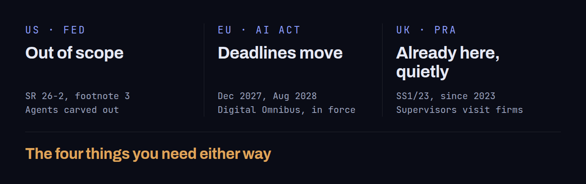

I have worked with a few companies where employees could not tell you which AI agents were running in the business. That is the gap these regulations are supposed to close, and at the moment three of the biggest regulatory bodies in the world are closing it in three completely different ways.

All three of these sit predominantly in banking.
The US: out of scope for now
The Federal Reserve recently released SR 26-2, an update to its model risk management guidance. Did it include a large section on agents? No. It included footnote 3, which reads in full: "Generative AI and agentic AI models are novel and rapidly evolving. As such, they are not within the scope of this guidance." Too fast moving and too novel to react to, so out of scope for this set of regulation.
Bear in mind this update comes fifteen years after the last full revision. SR 26-2 supersedes and replaces SR 11-7 from 2011 and SR 21-8 from 2021, the latter a narrow statement about anti-money-laundering systems rather than a rewrite of the framework. So I hope it is not another fifteen years before agents come into scope.
The update does not make many material changes. It reshapes and sharpens the logic behind the existing guidance, and it is a lot clearer about the purpose and the exposure of any given model, which then decides how much rigour needs to be applied. Effective challenge stays: qualified people with the standing to question and query what a model is doing.
Two other things are worth pulling out. It is aimed at the largest institutions, being most relevant to banking organisations with over $30 billion in total assets, and it is explicitly non-binding. Non-compliance does not automatically mean you have to do anything different. If you are doing something that looks unsafe or suspicious, you would attract supervisory attention.
And the definition of a model here is something that produces an output. Not AI agents, not generative systems.
The EU: the deadline moves
The EU has not brought in new regulation for agents. It has moved the deadlines on the ones it already had. The AI Act is broad-spectrum, risk-classified regulation, sorting systems by their impact.
- Unacceptable, or prohibited: social scoring, scraping facial data into databases. No grace period, brought into enforcement in 2025.
- High risk: heavily regulated, and this is the tier that has moved. Critical infrastructure, medical uses, education, law enforcement, finance and other areas that can impact someone.
- Limited risk: chatbots and similar. This is really about transparency: making sure people know when they are dealing with AI and are not being tricked into thinking otherwise.
- Minimal risk: enabling things like spam filters, or AI built into video games.
What has actually moved is the AI omnibus deadline for high-risk systems. Standalone high-risk systems under Annex III now have until December 2027 rather than August 2026, a sixteen-month extension, and high-risk AI embedded in regulated products has until August 2028. This is settled rather than proposed: the Digital Omnibus on AI was published as Regulation (EU) 2026/1744 in July 2026 and is in force, so it can be planned against. I am sure there are a lot of governance teams who are happy about that. Sixteen months is a lot of extra time in that sort of area.
What it does not mean is that this will not be regulated. It means the onus sits with companies to self-regulate in the meantime, and to do the setup themselves in preparation for the regulator taking charge of it.
The Fed says as much itself, in the same breath as putting agents out of scope: a banking organisation's own risk management and governance practices should determine the appropriate governance and controls for anything the guidance does not cover. Out of scope is not the same as unregulated. It means you own it.
The UK: already here, quietly
The UK took a vastly different approach and introduced regulation a couple of years back, quietly, and almost nobody writes about it. That is the reason I am talking about it now: it is not new news, it has just been sitting there.
The PRA is the Prudential Regulation Authority. It sits inside the Bank of England and is responsible for the prudential regulation and supervision of around 1,300 banks, building societies, credit unions, insurers and major investment firms, with a focus on those firms being run safely and soundly.
Its expectations are focused on banking, but deliberately vague in one important respect. They are not specific to a type of model. The PRA treats model risk as a risk in its own right, and the expectations are written broadly enough to cover machine learning and AI alongside everything else. They apply across the board rather than to a named list of model types. They apply to banks with permission to use internal models for regulatory capital purposes, and insurers can opt in, though it is not mandatory for them.
It is also not just a piece of paper. Supervisors will go into firms to understand how AI is being used and what can be improved. Compared with the US position, there is a clear intention that this should be regulated properly, and thank goodness for that.
The four things you need either way
Whichever regime you sit under, the same four things come up.
- Inventory: no shadow IT, no shadow AI. You need a record of every agent you are running.
- Tiering: keep classifying by impact. Know what each agent is being used for and how.
- Effective challenge: people who are skilled and knowledgeable enough to understand what the agent does, what it is for, and how to stop it quickly.
- Third parties: the one that probably slips through a lot of the cracks. Work out how your vendors are using AI on your behalf.
Models estimate, agents act
When I was working in financial services, transparency and explainability were some of the limiting factors. That is why most firms stuck with simpler models rather than complex ones that were hard to explain, and it is why I did my dissertation on the explainability of deep learning models, to see whether they could meet that transparency threshold. That has shifted over the last few years.
But the newer regulation has to deal with a different problem. A model produces an estimate. An agent takes an action. Where you would ask of a model whether the risk is acceptable and the output is correct, with an agent a business has to go a step further and be much more precise: what can it do, who has granted permission for those actions, and how quickly can that permission be revoked.
None of that is about accuracy. It does not show up in the results. These are questions that have to be asked well before design, and built into what we build.
Which is why the human in the loop stays.
It is about staying conscious of what we are building and how we are building it.
It has also gone a step beyond where my dissertation sat. It is no longer a case of explaining one model's output. Now there can be multiple agents across multiple steps before you see an output, and you have to be able to explain all of them.
Where I would start
If I were starting fresh, rather than continuing what we already do in my current role, I would do three things.
First, list every agent, including third-party ones that might be embedded in tools you already use. Second, name who performs the effective challenge. We have a review board and an AI ethics committee that looks at our agents before we start building. Third, go through each agent you have or want, and ask what it is allowed to do, and how you would revoke that access if you needed to stop it.
Having that governance in place is not a blocker. It is what lets us navigate these systems quickly and operate at a faster, safer, more careful pace. It also stops the shadow AI problem, which is common enough: if you do not know what is running around the business, why not.
For anyone in the EU, the next few months of pushed-back deadlines are the opportunity. Build the structure and the systems now so that you are faster when it becomes mandatory, rather than facing rework on your existing agents and a standing start on the new ones at the same time.
That is what we are building out in my current role. We are taking our time over it, with clear systems that agents go through before we start building. It lets us move fast, instead of being restricted to building whatever somebody thinks would be fun.
Feel free to reach out if you'd like to know more or have any questions.